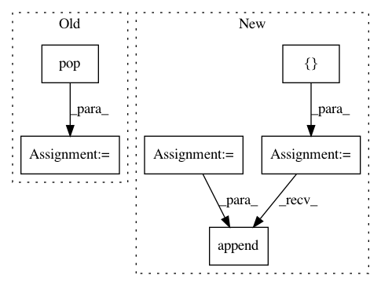

0bcc8da0344cddc9dfff82a788df519c19489500,nltk/tokenize/treebank.py,TreebankWordTokenizer,span_tokenize,#TreebankWordTokenizer#Any#,147
Before Change
matched = [m.group() for m in re.finditer(r"[(``)(\"\")(")]+", text)]
// Replace converted quotes back to double quotes
tokens = [matched.pop(0) if tok in [""", "``", """"] else tok for tok in raw_tokens]
else:
tokens = raw_tokens
return align_tokens(tokens, text)
After Change
// Convert converted quotes back to original double quotes
ix = 0
spans = []
for word_token in self.tokenize(text):
if word_token in ("``", """"):
orig_idx = text.find(word_token, ix)
quote_idx = text.find(""", ix)
if orig_idx < 0:
real_token = """
elif quote_idx < 0:
real_token = word_token
elif orig_idx < quote_idx:
real_token = word_token
else:
real_token = """
else:
real_token = word_token
ix = text.find(real_token, ix)
end = ix + len(real_token)
spans.append((ix, end))
ix = end
return spans
In pattern: SUPERPATTERN
Frequency: 3
Non-data size: 6
Instances
Project Name: nltk/nltk
Commit Name: 0bcc8da0344cddc9dfff82a788df519c19489500
Time: 2017-10-17
Author: lyyb46@gmail.com
File Name: nltk/tokenize/treebank.py
Class Name: TreebankWordTokenizer
Method Name: span_tokenize
Project Name: analysiscenter/batchflow
Commit Name: 4c50261df4847bdfd7c8067307e8532f96d04104
Time: 2019-08-02
Author: Tsimfer.SA@gazprom-neft.ru
File Name: batchflow/models/torch/encoder_decoder.py
Class Name: EncoderDecoder
Method Name: decoder
Project Name: snipsco/snips-nlu
Commit Name: 5d269f422294ed370c4f404f3a90dc1641f48b15
Time: 2019-01-08
Author: clement.doumouro@gmail.com
File Name: snips_nlu/entity_parser/custom_entity_parser.py
Class Name: CustomEntityParser
Method Name: _parse